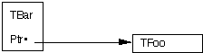

|
|
This Technical Note covers most of the common and serious subtle problems that
a MPW C++ user might encounter. For more information consult the current C++
literature. This Note will be updated periodically to reflect changes in the
language and the compiler. Always read the release notes included with the MPW
C++ to find out the latest status for known bugs and restrictions.
[Jan 01 1992]
|
Introduction
C++, like any other computer language, has its own subtle problems, traps, and
pitfalls. It is impossible to figure out all the possible pitfalls that may
occur, but this Technote covers the most frequently asked questions about MPW
C++ problems.
Back to top
Class Protection and Inheritance
Access Control Problems
The C++ compiler assumes private access control if any of the access control
keywords are omitted. For instance, in the following case the member function
Run is declared private, and thus is not accessible from the
outside the class:
class TClass
{
TClass() {/* constructor code *}
void Run(); // private member function
// ...
|
This is also true when using inheritance; if no keywords are included, the
compiler assumes that the base class is inherited as a private member:
class TFoo : TClass
{
// ...
|
Always exercise special care when using inheritance, and use the keywords
private, protected, or public to avoid unexpected
problems.
Derived Classes
Every member function must function properly for the same range of arguments
accepted by the base class. If not, then the derived class is not a true
subtype of the base and you may encounter subtle and bizarre problems that are
hard to find.
Note that if you inherit the base class as a private class, it is the same as
if the class were a private member of the derived class. Thus there are few
cases where one needs to import a base class as a private class.
Be especially careful to avoid changing the meaning of a base class's public
interface. Any public member function of the base class should not have its
semantics changed by the derived class. Fortunately the MPW C++ compiler warns
you if this is done.
Here's an example: if a class TBase has an overloaded operator
== for comparison that takes a const TBase& as an argument,
then any override of this function by a derived class TDerived must
preserve its semantics. In particular the TDerived class override may
not assume that the argument is of type const TDerived&, as that
changes the meaning of the member function that is inherited from
TBase's public interface.
In this case it would be better to overload operator == to accept an
argument of type const TDerived&, and to reexport the inherited
operator ==. Thus you need to overload the derived class's operator if
the comparison overload will make use of a new data structure. Another solution
would be to use a pointer to a function/member function to define the actual
comparison routine instead of assuming there is a fixed comparison routine.
Careful analysis of the use of data structures should help you avoid these
problems. Bugs related to this particular problem are extremely difficult to
track down, especially when the class inherits from two or more base classes,
each of which defines a function with the same name but with different
semantics.
Derived Classes as Variables
Any member function that accepts a reference or pointer to a class must be
prepared to receive a derived class as an actual argument. Therefore the
recipient function must deal with the argument through an interface that is
guaranteed to be preserved in derived classes. If this is not the case the
function call will fail when used with derived classes. If this is not
feasible, then the class documentation should state that it cannot be used as a
public base class.
Scoping Issues
The scope rules in C++ are in flux. The earlier C++ compilers did not protect
the name space concerning scoping of types declared inside classes. This has
changed in MPW C++ 3.2. You are now able to define typedefs,
enums, and classes/structs with a class scope. However, read the
release notes for your MPW C++ version for possible known bugs and limitations
concerning this new feature.
Back to top
Type Casting
The Problem: Conversion Versus Coercion Type Casting
Type casting is occasionally necessary in C and C++, but you should be aware of
the consequences every time you need to use it. Casts are very uncontrolled and
dangerous, and you should ask yourself if you really need to do one every time
you catch yourself in the act.
There are two types of casts in C++. The first one merely changes an object
from one type to another. This includes casts between the built-in arithmetic
types and casts involving class objects (not pointers to classes). These are in
general fairly safe, since an actual conversion is taking place.
The other type of cast involves pointers, and these casts are dangerous. This
type of cast involves so-called type coercion: the bit pattern of one type is
interpreted as another type. This is very unsafe, and could cause the code to
die mysteriously and subtly.
Unfortunately, some C++ constructs can be interpreted as either of the two
types of casts. A cast from one class pointer to another is interpreted as a
conversion cast if the two types are related by type inheritance and as
coercion casts if they are not. The C++ compiler does not warn you if you
intend the first cast but wind up with the second. Worse, a cast between
pointers to member functions may be a conversion on the class part but a
coercion on the function prototype part.
Casting Cases
Some casts are always of the coercion type. For instance, casting a const (and
a future volatile) pointer to one without those attributes is always a
coercion. Avoid performing such casts. If you make a member function const
because it does not change the object semantics, then you must cast your
this pointer to non-const to make changes to the internal object state.
However, this technique is not recommended; instead you should overload the
function or make another design decision.
There are also casts to and from void*. These are dangerous. Avoid
such casts, even if the void* is a useful construct. For instance, do
not use void* to avoid assigning a type to a variable or parameter.
Use it only for manipulation of raw storage.
Even if casts from a base class pointer to a derived class pointer are
conversions, you should avoid these. First, if you accidentally specify types
not related by inheritance, you will get a silent coercion. Second, this is a
poor programming technique and removes vital information used for type
checking. The future template support in C++ should obviate the need for most
such casts.
In general the only normally acceptable cast is the conversion type. Avoid all
casts involving pointers unless absolutely necessary. Note that nonpointer
casts can never silently become coercions.
Back to top
General Class Issues
Handling Failing Constructors
Constructors and destructors do not return any values, so a returned error code
is not possible. There are many ways to provide error handling with
constructors/destructors.
For instance, the class could have an internal field that signals whether the
construction of the class succeeded, as well as a special test method or
invariant method that checks whether the state of the newly created class is
valid. Failing to figure out if a class is properly constructed could lead to
many subtle bugs. If possible the class should be constructed to a known state
so that it can be destructed without problems.
You should also save information about why the construction failed, which could
be useful for future class operations. The future C++ exception handling scheme
will solve this problem. Also one might use the MacApp FailInfo
exception handling files in other non-MacApp projects.
Back to top
Operator Overload Issues
Assignment operators should always start with a test that checks whether the
object (by mistake) wants to assign to itself, as in aFoo = aFoo;,
which could cause subtle problems. This is done as in the following:
TFoo& TFoo::operator=(const TFoo& aFoo)
{
if (this == &aFoo) return *this;
//...normal assignment duties...
return *this;
|
Also, always overload all cases of the operator use, for instance both the
'x = x + y' and the 'x += y' operations.
If you are overloading certain operators, make sure that you know whether they
have already been overloaded, and what they return/pass as values. Otherwise
the compiler will complain about mismatch between formal and actual parameter
types. For instance, new is overloaded with PascalObject and
HandleObject base classes, and returns a Handle instead of a
void*. Note also that if two programmers independently change the
behavior of new, the resulting program might not work as expected.
Also, you need to inherit publicly from your base classes if you want the
behavior of any new operator overload in the base class.
Back to top
Inlining Issues
General
The C++ inlining feature is purely a hint to the compiler indicating that
inline substitution of the function body is to be preferred to the usual
function implementation. Inline code is usually used for code optimization:
instead of calling a function, the whole body is inlined at the point of call,
thus saving the cost of a function call.
Here's a simple example:
class TClass {
public:
long GetField(void) {return this->fField;};
void SetField(long);
private:
long fField;
};
inline void TClass::SetField(long theValue)
{
this->fField = theValue;
|
Note that there are two different ways inline is indicated: by placing the
function specifier inline in front of the function (or member function)
declarator, or by defining the code directly in the class (by which the
statements are automatically considered to be inlined). See Section 7.2.1 of
The Annotated C++ Reference Manual for more information on inline
function declarations.
As inlining is purely an optimization issue, it should be used only when the
benefits in run-time or space outweigh the costs and inconveniences imposed by
its use. The major cost of a function call is usually the cost of executing the
function body, not the cost of making the call. Therefore, inlining should be
used mostly for simple functions. Examples of such functions are functions that
set or get a value, increment or decrement a value, or directly call another
function. A function consisting of one or two simple expressions is usually a
good inline candidate.
Compiler Considerations Concerning Inline Statements
The MPW C++ compiler has a set of rules by which it determines if an inline
statement will be inlined or not. Some of the rules are easily quantified, such
as the fact that recursive functions are never inlined; others vary depending
upon whether or not the inline function return type is void, and upon the
calling context. An inline function invoked in an expression context other than
a call statement cannot be inlined if it contains code that cannot be reduced
to one or more expressions. For instance, an if-then-else statement is
only acceptable in such a calling context if it can be successfully converted
to a conditional (?:) expression.
The following rules concern Apple's AT&T CFront port, MPW C++ 3.2 (and
should also cover most cases with MPW C++ 3.1):
Recursive Functions
Recursive functions are never inlined.
Large Functions
Any function containing 12 or more assignments will not be inlined. Otherwise,
size is less of an issue than complexity. For example, a function containing 5
or more calls will not be inlined, but the compiler may also refuse to inline a
function containing fewer calls if there are other statements adding to the
complexity. You can override the compiler's decision not to inline something
based on size by using the -z17 option, but caution should be
exercised.
Functions Invoked Before Defined
If an inline function is called before it is defined, it cannot be inlined. For
example:
static int an_inline_function();
int an_outline()
{
return (an_inline_function());
}
static inline int an_inline_function()
{
return 1;
|
Because the compiler had not seen the inline body of "an_inline" when it
encountered the first call, it will generate a call in "an_outline" and an
out-of-line copy of "an_inline".
Functions Invoked Twice or More Within an Expression
Typically, in this case, the compiler will inline the body of the function for
the first usage and then use calls for subsequent uses within the same
expression.
An out-of-line copy of "some_inline" will be generated and called for the right
operand of the addition, in most cases. The compiler may still be able to
inline the function in both places if it declares no variables and if either it
has no parameters or the actual parameter expressions are sufficiently
simple.
Functions Containing loop, switch, goto, label, break, or continue
Statements
Value-returning inline functions will not be inlined if they contain any of the
statement types listed above. Even non-value-returning inline functions cannot
be inlined if they contain such statements and are invoked in the middle of an
expression; the only control flow statement that can be inserted into the
middle of an expression is the if-then-else statement.
Taking the Address of an Inline Function
An out-of-line copy will be generated for any inline function whose address is
needed, either because it is the explicit target of the unary
'&' operator or because it is used to initialize a function
pointer. Virtual calls of virtual inline functions fall into this category as
well.
Non-Value-Returning Inline Functions Containing a Return Statement
These are never inlined.
Functions Declaring Static Variables
These are never inlined.
Functions Containing Statements After a Return
An out-of-line copy will be generated for any inline function with one or more
statements after the return statement. This applies primarily to
value-returning functions, since non-value-returning functions containing any
return statement will never be inlined. For example:
inline int an_inline(void)
{
if (condition)
return 0;
do_something(); // will suppress inlining
return something;
|
Segmentation Issues Concerning Non-Inlined Statements--Which Segment
Do Unexpectedly Outlined Functions Appear In?
Inlined code, which is suddenly outlined by the compiler, usually ends up in
whichever segment that is actual for the call that caused the inline code to be
outlined. Typically the outlined code ends up at the end of the object file.
If you want to control in what segment the code will be placed, bracket all the
header files with '#pragma segment HeaderFiles',in combination
with #pragma push and #pragma pop. This way you are able to
control into what segment the inline code will end in if it's suddenly
outlined. Here's an example of how this is done:
// push the pragma state information
#pragma push
// define segment name for suddenly outlined inline-code
#pragma segment IfOutlinedItGoesHere
class TFoo{
public:
TFoo(){/* ...*/}
long InlineMeMaybe(long x){/* ...*/}
// ...
};
// pop back the original pragma information
|
Compiler Directives
Suppression of No Inline Code
The MPW C++ compiler has a -z0 switch, which forces all inline code to
be non-inline. This switch is useful when trying to track down problems that
are eventually related to inline code generation.
Forced Inlining of Large Functions
The MPW C++ compiler has a -z17 switch that will force inlining of
functions that would normally be rejected because of size considerations.
Consider carefully before using this switch as it can lead to large code. It
may also cause CFront to generate expressions larger than the MPW C compiler
can handle.
|
Warnings:
The new MPW 3.2 C++ compiler (available on ETO CD #5 forward)
is based on CFront 2.1 (AT&T), and the -w flag in this release
will now indicate when the compiler chooses not to inline a function declared
inline.
|
Conclusion
Inline-defined functions are just hints to the compiler, and the inline code
generation rules will vary from implementation to implementation. The rules
described in this document are true for the Apple MPW C++ compiler. Some of
them are limitations resulting from the fact that MPW C++ generates C code;
other inlining problems will also apply to native compilers. One needs to
realize that inline statements are not always inlined by C++ compilers, and
that inlining rules are C++ /C compiler implementation dependent.
Back to top
Memory Leakage
General
Memory leakage usually occurs when space is dynamically allocated on the heap
and, usually because of a programming error, the heap space is never
deallocated. Unfortunately, with C++ hidden memory leaks can happen, which in
the Macintosh memory system will trigger a heap-stack collision and a bomb.
Here's a list of possible memory leaks and memory allocation problems, and ways
to avoid them:
Nonpaired New/Deletes
If you allocate data on the heap with new, it usually should be deleted with a
subsequent delete call. This usually happens when the object goes out of scope,
but if the data is explicitly allocated in the heap the compiler doesn't know
how to purge this when the object goes out of scope. This problem comes up
especially when an object creates space for data on the heap as part of its
class structure, as in the following:
class TFoo{
public:
TFoo(char* name); // forgot to declare a ~TFoo() which would
// delete the fName structure
private:
char* fName;
};
TFoo::TFoo(char* name)
{
fName = new char[strlen(name) + 1];
strcpy(fName, name);
|
The fName data structure will be on the heap until delete is called.
If you delete the fName string in the destructor then you will avoid
the memory leak.
Object Pointers That Are Nested Inside Classes
If the class makes use of objects that are referenced via pointers, they need
to be deleted; otherwise the data will stay in the heap, as in the following:
class TBar{
public:
TBar(char* type);
~TBar();
private:
TFoo* fFoo; // from the earlier example
char* fType;
};
TBar::TBar(char* type)
{
fFoo = new TFoo("Willie");
fType = new char[strlen(type) + 1];
strcpy(fType, type);
}
TBar::~TBar()
{
delete fType; // this is OK
// but you also need to delete the fFoo, as in:
// delete fFoo;
|

Figure 1. Nested Objects
Missing Size Arguments to the Delete Function
The delete function needs the size of the deleted data structures, especially
in the case of deletion or arrays of objects. Note that this problem will go
away with MPW C++ compilers (MPW 3.2 C++ and later ones) where the general
[] notation keeps track of the sizes of the arrays. For example:
main()
{
TFoo* fooArray = new TFoo[10];
// create an array of 10 TFoo:s
// do something
// delete the array
delete [] fooArray;
// should be delete [10] fooArray with MPW C++
// 3.1;
|
Problems With Arrays of Pointers Versus Arrays of Objects
There is a subtle but important difference between an array of pointers to
objects, and an array of objects themselves. The use of the delete operator is
different in either case, as in the following:
main()
{
TFoo** fooArray = new TFoo[10]; // array of pointers to objects
for(int i=0;i<10;i++) // create the objects in the array
fooArray[i] = new TFoo("Steve");
// do something
// now clean up the array
delete [10] fooArray; // this only cleans up the
// pointers, not the objects
// themselves
// the following code should be used instead:
for(i=0;i<10;i++)
delete fooArray[i];
delete [] fooArray;
return 0;
|
Figure 2. Objects Left Due to Missing Arguments
Memory leaks such as this becomes even more dangerous with object-oriented
databases and persistence cases, where a leak could address more and more hard
disk space on a server.
Missing Copy Constructor
When operator overloading occurs, dynamically allocated memory for temporary
data storage can suddenly develop a subtle leak that eats memory slowly. For
instance an implicit call to an undefined copy constructor could be dangerous.
These kinds of constructors are called whenever an initialization is done in
code, when objects are passed by value on the stack, or when objects are
returned by value. For example:
class TFoo{
public:
TFoo(char* name, int age);
// TFoo(const TFoo&); note, no copy constructor defined!!
~TFoo();
TFoo Copy(TFoo); // copy function, will call default
// copy constructor
private:
char* fName;
int fAge;
};
TFoo::TFoo(char* name, int age)
{
fName = new char[strlen(name) + 1];
strcpy(fName,name);
fAge = age;
}
TFoo::~TFoo()
{
delete fName;
}
TFoo TFoo::Copy(TFoo orig)
// note that this code is the same as the
// code which the compiler would create
// for a default copy constructor (i.e.
// field-wise copy).
{
fAge = orig.fAge; // plain pointer copy
fName = orig.fName;
return *this;
}
main()
{
// create two objects
TFoo f1("James", 25);
TFoo f2("Michael", 29);
TFoo f3 = f2; // this calls the copy constructor
// TFoo f3(f2) would also trigger this
// do something
f1.Copy(f2); // this causes two implicit calls
// to the default copy constructor
// we have a problem, fName is deleted twice, once
// when f1 is destructed,
// and the second time when d2 is destructed
return 0;
}
// solution, create a specific copy constructor, as in:
TFoo::TFoo(const TFoo& orig)
{
fAge = orig.fAge;
fName = new char[strlen(orig.fName) + 1];
strcpy(fName, orig.fName);
|
In general, if the class constructor assigns dynamic data, there should be a
copy constructor that does the same as well. Note also that call by reference
does not generate a copy constructor, so use of references is both faster and
should generate fewer unexpected memory leak problems.
Missing Overload Assignment Operator (operator=)
Every class that dynamically allocate storage for members should also have a
defined overload assignment operator. If this operator is not clearly designed,
there can be memory leaks due to assignment of dynamic data. For example:
class TFoo{
public:
TFoo(char* name, int age);
TFoo(const TFoo&);
// const TFoo& operator=(const TFoo& orig);
// note missing operator
// overload
// operator
~TFoo();
private:
char* fName;
int fAge;
};
TFoo::TFoo(char* name, int age)
{
fName = new char[strlen(name) + 1];
strcpy(fName,name);
fAge = age;
}
TFoo::~TFoo()
{
delete fName;
}
TFoo::TFoo(const TFoo& orig)
{
fAge = orig.fAge;
fName = new char[strlen(orig.fName) + 1];
strcpy(fName, orig.fName);
}
main()
{
// create two objects
TFoo f1("James", 25);
TFoo f2("Michael", 29);
// do something
f2 = f1;
// this calls the default operator
// = overload, does not take into
// account the dynamic data
// (fName)
return 0;
}
// The solution is to define an operator=:
const TFoo&
TFoo::operator=(const TFoo& orig)
{
// avoid assignment to itself, as in aFoo = aFoo
if(this ==&orig) // same address?
return *this;
fAge = orig.fAge;
delete fName; // purge the dynamic memory slot
fName = new char[strlen(orig.fName) + 1];
strcpy(fName,orig.fName);
return *this;
|
Incorrectly Overloaded Operators
In general, try to make overloaded operators return references to objects to
avoid overhead associated with calls to copy constructors. So how should you
overload the operators in order to achieve this?
Figure 3. Correct Overload of Operators
Here's a good solution, we will return a real object instead of a reference in
operator+:
class TFoo{
public:
TFoo() {}
TFoo(char* name, int age);
TFoo(const TFoo&);
const TFoo& operator=(const TFoo& orig);
~TFoo();
// here's the example of operator+ overload:
TFoo operator+(const TFoo&); // return TFoo by value!
// don't forget to overload +=
// also!
private:
char* fName;
int fAge;
};
TFoo::TFoo(char* name, int age)
{
fName = new char[strlen(name) + 1];
strcpy(fName,name);
fAge = age;
}
TFoo::~TFoo()
{
delete fName;
}
TFoo::TFoo(const TFoo& orig)
{
fAge = orig.fAge;
fName = new char[strlen(orig.fName) + 1];
strcpy(fName, orig.fName);
}
const TFoo&
TFoo::operator=(const TFoo& orig)
{
// avoid assignment to itself, as in aFoo = aFoo
if(this ==&orig) // same address?
return *this;
fAge = orig.fAge;
delete fName; // purge the dynamic memory slot
fName = new char[strlen(orig.fName) + 1];
strcpy(fName,orig.fName);
return *this;
}
TFoo
TFoo::operator+(const TFoo& orig)
{
TFoo temp; // create TFoo on the stack
temp.fAge = fAge + orig.fAge; // add ages, heh!
temp.fName = new char[strlen(fName) + strlen(orig.fName) + 1];
sprintf(temp.fName,"%s%s", fName, orig.fName);
// concatenate names, heh!
return temp;
}
main()
{
// create two objects
TFoo f1("James", 25);
TFoo f2("Michael", 29);
TFoo f3 = f1 + f2;
return 0;
|
Back to top
Tricks to Help You Find Memory Leaks
In general, you need to go through the code carefully and analyze any possible
subtle memory leaks. Another trick is to override the new and delete operators,
and have them print status information to a log file (using for instance the
__FILE__ and __LINE__ macros), and after running the program
you can check to see whether each created data structure on the heap is
deleted or not.
Here's an example of a possible tracer class, which could be used as the
"stamp" for keeping track of class construction and destruction:
#include <stream.h>
#define TRACEPOINT __FILE__,__LINE__
// make use of the ANSI __FILE__ and __LINE__ macros
class TTracer {
public:
TTracer(const char* className, const char* = 0, int = 0);
virtual ~TTracer();
private:
const char* fLabel;
const char* fFile;
int fLine;
static int fReferenceCount;
// keep track of how many TTracers we
// construct
};
TTracer::TTracer(const char* label, const char* file, int line) :
fLabel(label), fFile(file), fLine(line)
{
fReferenceCount++;
cerr << "File " << fFile <<" ; Line " << fLine
<<" #+++ constructor event in " << fLabel
<< " (reference count = " << fReferenceCount << ")\n";
}
TTracer::~TTracer()
{
fReferenceCount--;
cerr << "File " << fFile <<" ; Line " << fLine
<< " #--- destructor event in " << fLabel
<< " (reference count = " << fReferenceCount << ")\n";
}
int TTracer::fReferenceCount = 0; // initialize with 0 value
TTracer gGlobalTracer("gGlobalTracer", TRACEPOINT);
// this will construct a global/universal tracer
// example of use:
void InvertPermutation(int* perm, int* inv, int max)
{
TTracer autoTracer("InvertPermutation function", TRACEPOINT);
if(perm && (new TTracer("temp", TRACEPOINT))
// show TTracer in action
&& inv
&& (new TTracer("temp2", TRACEPOINT))
// these two are never destructed = memory leak!
&& (max > 0))
{
TTracer otherTracer("otherTracer", TRACEPOINT);
for(int i = 0; i < max; i++)
{
TTracer thirdTracer("iterationTracing...",TRACEPOINT);
inv[perm[i]] = i;
}
}
}
// array declarations
int perm [] = {1, 2, 3, 6, 7};
int max = 5;
main()
{
int* inv = new int[max];
InvertPermutation(&perm[0], inv, max);
return 0;
|
The result should look like this (note the output; you can double-click from
MPW to get to the source code line in action):
File TTracer.cp ; Line 52 #+++ constructor event
in InvertPermutation function (reference count = 1)
File TTracer.cp ; Line 54 #+++ constructor event
in temp (reference count =2)
File TTracer.cp ; Line 56 #+++ constructor event
in temp2 (reference count = 3)
File TTracer.cp ; Line 59 #+++ constructor event
in otherTracer (reference count = 4)
File TTracer.cp ; Line 62 #+++ constructor event
in iterationTracing... (reference count = 5)
File TTracer.cp ; Line 62 #--- destructor event
in iterationTracing... (reference count = 4)
File TTracer.cp ; Line 62 #+++ constructor event
in iterationTracing... (reference count = 5)
File TTracer.cp ; Line 62 #--- destructor event
in iterationTracing... (reference count = 4)
File TTracer.cp ; Line 62 #+++ constructor event
in iterationTracing... (reference count = 5)
File TTracer.cp ; Line 62 #--- destructor event
in iterationTracing... (reference count = 4)
File TTracer.cp ; Line 62 #+++ constructor event
in iterationTracing... (reference count = 5)
File TTracer.cp ; Line 62 #--- destructor event
in iterationTracing... (reference count = 4)
File TTracer.cp ; Line 62 #+++ constructor event
in iterationTracing... (reference count = 5)
File TTracer.cp ; Line 62 #--- destructor event
in iterationTracing... (reference count = 4)
File TTracer.cp ; Line 59 #--- destructor event
in otherTracer (reference count = 3)
File TTracer.cp ; Line 52 #--- destructor event
|
Back to top
Virtual Functions
Virtual Base Classes
As part of the multiple inheritance semantics, MPW C++ contains a feature
called virtual base classes. As you can see in figure 4, if both class B
and C are subclasses of A, and class D has both B and C as base classes, then D
unfortunately will have two A's subobjects if A is not a virtual base class.
Figure 4. Virtual Base Classes
Try to avoid this confusing situation, because outside programmers might have a
hard time trying to understand the new derived class. Also, virtual base
classes have a problem: once you have a pointer to a virtual base, there is no
way to convert it back into a pointer to its enclosing class.
So, if you have TFoo as a virtual base, and stick this class into an
array or another collection, there's no way to convert it back to the right
type via a cast when you get it out from the generic collection container.*
Anyway, you should avoid casting base classes to derived classes if possible.
Also, see Annotated C++ Reference Manual, Section 10, for more
information about virtual base classes.
*This problem will disappear with future template support.
Missing Virtual Functions
If you declare a virtual function in a class, you also need to implement the
function. Otherwise the linker will complain about undefined entry, name:
(Error 28) "_ptbl_4TFoo", for example. This might happen if you define a
function as virtual, but don't create the function until it's part of a
subclass.
The exception to this is pure virtual functions.
Virtual Destructor Use
Destructors are not implicitly virtual whether the class has other virtual
functions or not. This means that if you delete such an object via a pointer to
one of its bases, the derived class destructors will not be called. This is
bad, because it is important to call the right destructor.
If you wish the right destructor to be called during run-time, declare the
destructor virtual. A good rule is to declare all destructors virtual by
default, and deviate from this rule only if you don't want to have a vtable
(that is, no other virtual functions in the class), or if you want to save some
run-time lookup by providing a simple class.
Virtual Functions Are Not Real Functions
Virtual functions are references to virtual function resolve to vtable entries.
Be aware that they are not similar to normal functions in all cases; for
instance, you can't use them when unloading segments.
The workaround is to place an empty function stub in the same segment, and use
this function name when calling UnloadSeg.
Back to top
Compiler Issues
Declarations
The definition of C++ requires that data structures and functions have to be
declared before they are used.Understanding this should eliminate a lot of
obscure syntax problems. Note that when writing a particular class at the
beginning of the header file you can use the class before the class is
defined, as in the following:
class TFoo; // forward declare this class
class TBar{
// ...
TFoo* fFooPtr; // use the class!
// ...
};
Also, if you are using an enum or typedef in the class,
it has to be defined before used, as in the following:
class TFoo{
public:
// Constructors/Destructors
TFoo();
const TFoo& TFoo(const TFoo&);
virtual ~TFoo();
// Enums and Typedefs
enum EPriority {kLow, kMedium, kHigh};
// Accessors and mutators
TFoo& SetPriority(EPriority);
EPriority GetPriority();
// ...
|
Exception Handling and Register Optimization
The MPW C++/C compiler usually tries to move frequently updated variables to
registers. This is important to know if you are using exception handling,
either the MacApp provided calls or something based on setting/restoring
registers after an exception has occurred.
The following piece of code shows the problem:
void ProblemCase(void)
{
int nCount;
int nElements;
TFoo* temp;
TRY
{
for(nCount= 0; nCount < nElements; ++nCount){
temp = new TFoo;
temp->Initialize();
gApplication->AddTFoo(temp);
}
}
RECOVER
{
if(temp != NULL) temp->Free(); // clean up
if(count == 0) ExitApplication() // exit application
}
ENDTRY
|
In this case the nCount integer and the temp pointer will
most likely be optimized into a register allocation. If an exception occurs
while the count it updated inside the register, there's no way for the
exception handler to roll back the old values, because it assumes the stack
based values are OK. Thus any RECOVER action that assumes that the
values are OK might not work as expected.
Unfortunately MPW 3.2 C++ has not implemented the volatile keyword
(because it requires a full implementation). However we can emulate the
volatile behavior with a macro. We are interested in making sure the changed
variable is never placed into a register:
What we need to do is to make sure any possible variable that is subject to
change is wrapped inside the VOLATILE macro before it's used inside
TRY/RECOVER , as in:
// ...
VOLATILE(nCount);
VOLATILE(temp);
TRY
{
for(nCount= 0; nCount < nElements; ++nCount){
temp = new TFoo;
|
Back to top Testing/Debugging
General Issues
Do empirical testing/debugging sessions; eliminate one module at a time until
you have pinpointed the problem. Write incremental code, and test the new
features before continuing with the code writing.
Don't change too many variables at once when you are testing the code. All in
all, a controlled test experiment helps you understand how certain parts
interact with each other. If possible, use debugging code that can be turned on
and off with a compiler flag.
Conclusion
Careful consideration of any possible side effects will help a lot when using
any computer language. A good motto for programmers is Prepare for the
worst, and plan for the best.
Back to top References
MPW C++ 3.1 Reference
MPW C++ 3.1 Release Notes
The Annotated C++ Reference Manual, Ellis and Stroustrup,
Addison-Wesley
C Traps and Pitfalls, A. Koenig, Addison-Wesley
Back to top Downloadables
|

|
Acrobat version of this Note (96K).
|
Download
|
|